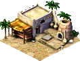
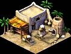
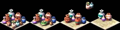
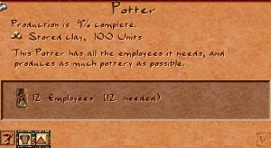

Pottery Workshop


The Pottery Workshop is a processing industry: it takes raw clay and turns it into pottery, a finished good that houses need to evolve and that the city can export for income.
It cannot run on its own — it must be fed clay, either from a local Clay Pit or imported over a trade route. Placing a workshop with no clay supply in the city raises an on-screen warning.
The workshop is a 2×2 building and, like all industry, it lowers the desirability of its surroundings — keep it away from housing you want to evolve to higher tiers.
Pottery Workshop
- Cost (Normal)
- 30 Db
- Cost by difficulty
- VE 12 · Easy 20 · Normal 30 · Hard 40 · VH 50
- Labor category
- Industry & Commerce
- Consumes
- Clay
- Produces
- Pottery
- Fire / Damage risk
- Low / Medium
Output

One unit of clay becomes one unit of pottery; output scales with how fully the workshop is staffed.
Overview
Pottery was an everyday necessity in ancient Egypt — vessels for storing grain, water, beer, and oil. In the game it is one of the first manufactured goods a city learns to make, and the first that ordinary housing demands in order to evolve past the early tiers.
The Pottery Workshop is a classic two-stage industry: a raw material (clay) is dug nearby and carried to the workshop, where workers turn it into a finished product (pottery) that is then distributed to homes or sold abroad. Getting that supply line right — pit, workshop, storage, and a distributor — is the core of the pottery economy.
Mechanics
Clay in, pottery out
While the workshop has clay in stock and is staffed, its potter works continuously, consuming clay and producing finished pottery. A cartpusher then carries each completed batch to a Storage Yard (or directly to a buyer). If the workshop runs out of clay it stands idle until more is delivered.
Supplying clay
Clay comes from a Clay Pit built on a clay deposit by the Nile, or is imported over an open trade route. When you place a Pottery Workshop the game checks for a clay source and warns you if there is no active clay industry, no stored clay, and no import route set up.
Output rate & staffing
Production speed depends on how fully the workshop is staffed — a fully manned workshop produces at its base rate, and output falls off as the worker percentage drops. Keep the workshop connected to a housing block with spare labor, or it will throttle down.
Production chain
Clay Pit → digs raw clay↳
Pottery Workshop → turns clay into pottery↳
Storage Yard → stockpiles pottery↳
Bazaar → House (evolution) · or exported for income
Every leg runs on roads: clay is carried from the pit to the workshop, finished pottery to a Storage Yard, and from there a Bazaar distributes it to homes. Houses need pottery to climb past the early tiers, and any surplus can be sold abroad over a trade route.
Info window
Right-clicking the workshop opens its info window, showing the workers employed, how much clay is in stock, and current pottery output. It is the quickest way to spot a stalled workshop that has run dry of clay.

Tips
- Always build the Clay Pit first (or set up a clay import route) — a workshop with no clay just sits idle and wastes its workers.
- Place the workshop close to its Clay Pit and a Storage Yard to keep cartpusher trips short; long hauls slow the whole chain.
- Industry drags desirability down (−4, fading over 4 tiles). Keep pottery workshops on the industrial side of town, away from the housing you want to evolve.
- Roughly one Clay Pit keeps one workshop fed; if the workshop frequently idles for lack of clay, add pit capacity or a second pit.
- Pottery is needed for housing to evolve past the early tiers — make sure a Bazaar can reach both the Storage Yard and your homes, not just produce the good.
Developer reference
All paths relative to the repository root.
Building config — src/scripts/building/pottery.js
src/scripts/building/pottery.js defines building_pottery with its clay→pottery input/output, production rate, and the placement check. The cost array is indexed by difficulty (VE · Easy · Normal · Hard · VH).
building_pottery {
input { resource : RESOURCE_CLAY }
output { resource : RESOURCE_POTTERY }
production_rate : 20
production_rate_dcy : [100, 80, 70, 60, 50] // scales with staffing
labor_category : LABOR_CATEGORY_INDUSTRY_COMMERCE
building_size : 2
cost [ 12, 20, 30, 40, 50 ]
desirability { value[-4], step[1], step_size[1], range[4] }
laborers[12] fire_risk[4] damage_risk[3]
flags { is_workshop: true, is_industry: true }
}
// Warns the player when there is no clay source for the workshop
[es=(building_pottery, on_place_checks)]
function building_pottery_on_place_checks(ev) {
... city.warnings.show_if_not(has_active_industry || has_stored_clay, "#building_needs_clay")
}C++ implementation — src/building/building_pottery.h / .cpp
src/building/building_pottery.h declares building_pottery (inherits building_industry), registered with BUILDING_METAINFO(BUILDING_POTTERY_WORKSHOP, …). It overrides is_workshop() → true, can_play_animation() (drives the potter animation), and draw_ornaments_and_animations_height(); its sound channel is SOUND_CHANNEL_CITY_POTTERY_WORKSHOP. The shared consume-input / produce-output / dispatch-cartpusher logic lives in the building_industry base. The building_pottery_on_update_graphic handler in pottery.js switches between the work and none animations via building.can_play_animation.